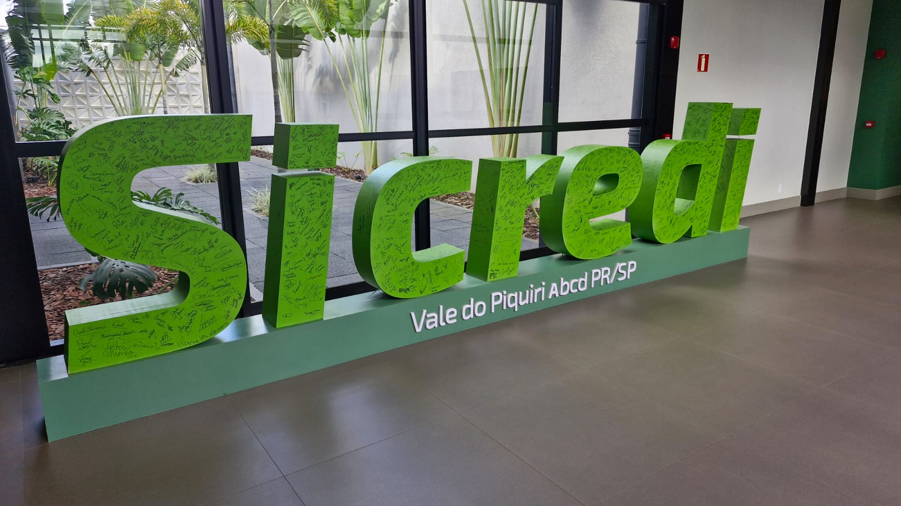
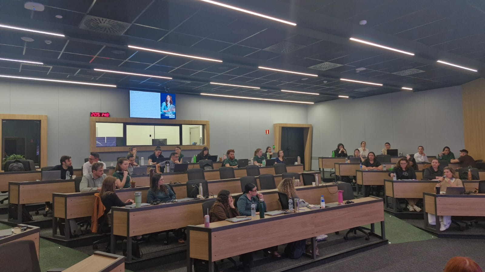
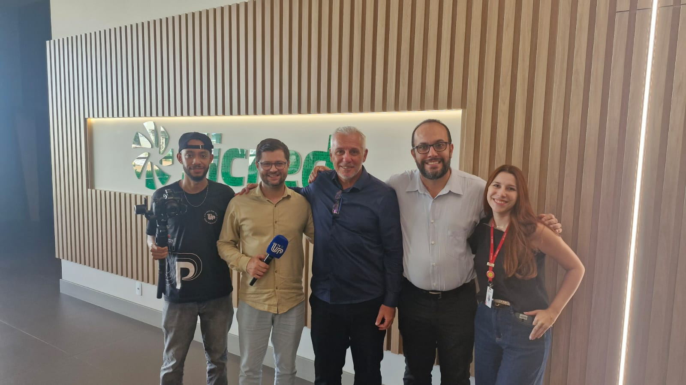
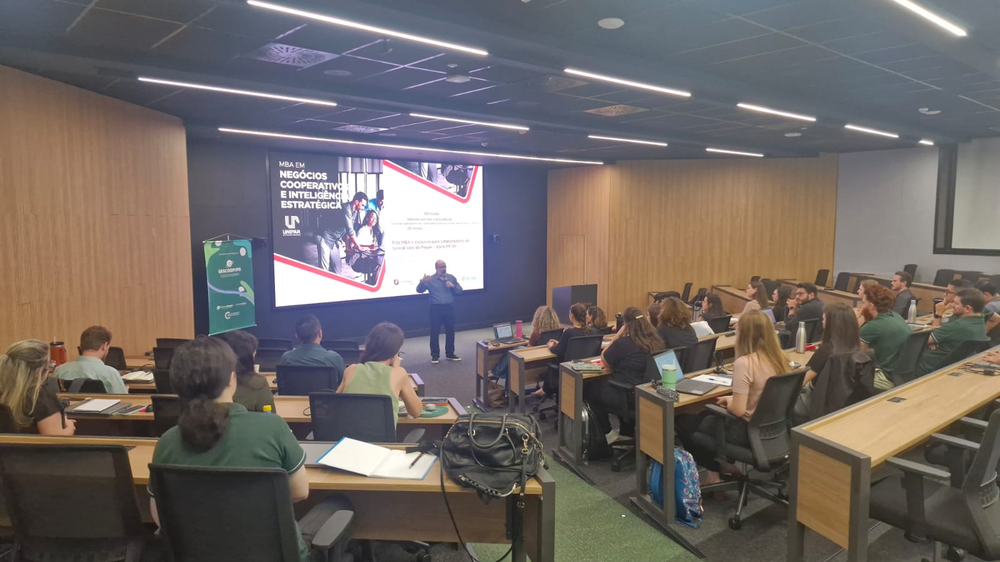
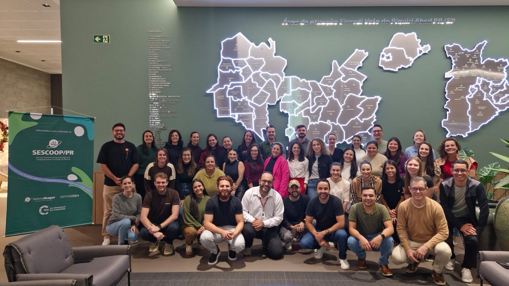
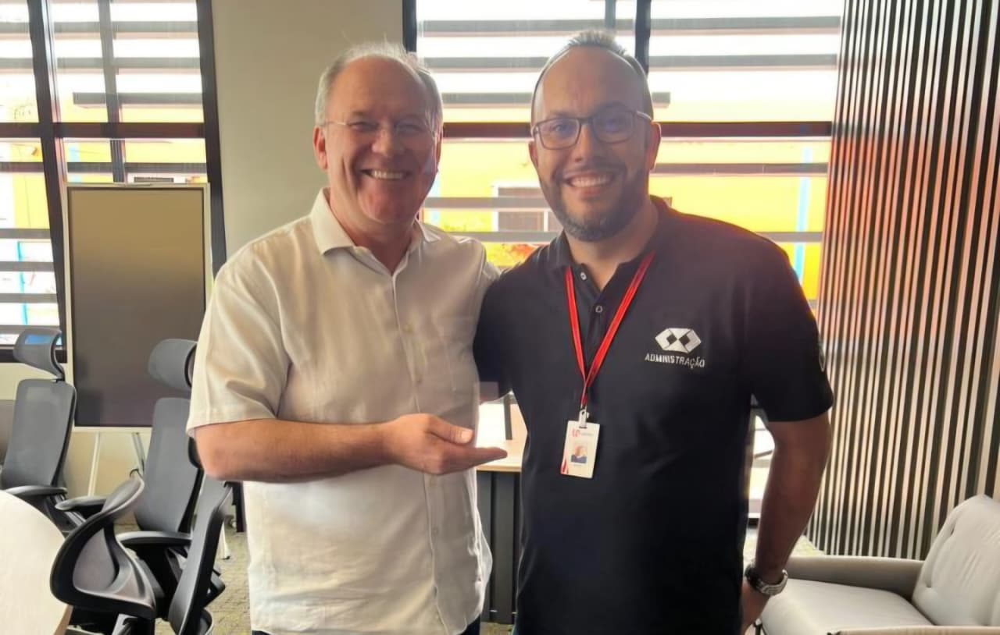
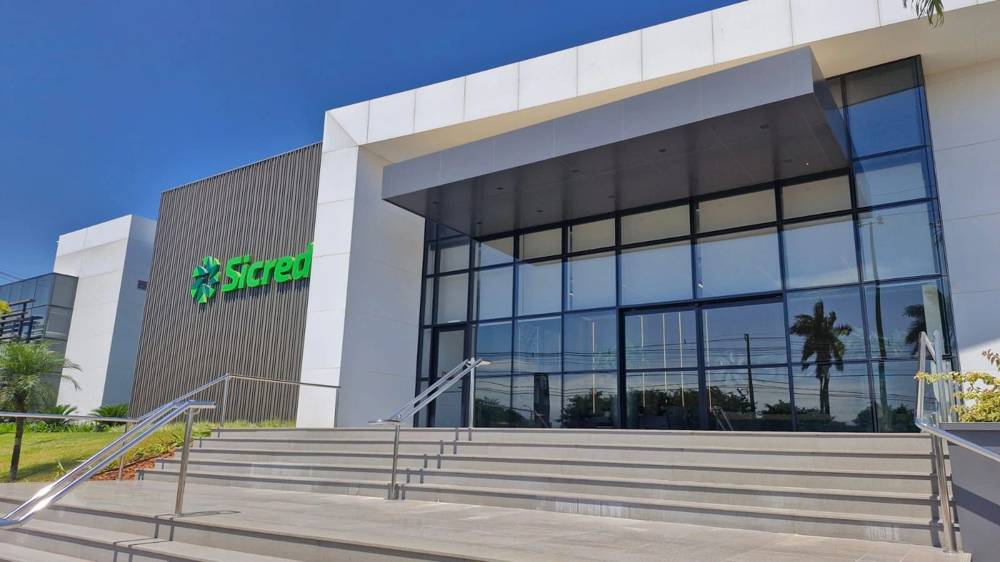

MBA em Negócios Cooperativos e Inteligência Estratégica
Sicredi Vale do Piquiri
Programa desenvolvido pela Unipar In Company em parceria com o Sicredi Vale do Piquiri, reunindo formação especializada em negócios cooperativos e inteligência estratégica.

Conhecimento aplicado aos novos desafios da gestão cooperativa
A formação de profissionais para um mercado cada vez mais dinâmico exige mais do que conhecimento técnico. É preciso desenvolver capacidade de análise, visão estratégica, liderança, inovação e, principalmente, habilidade para transformar conhecimento em soluções para problemas reais. É com essa proposta que a Unipar In Company desenvolveu o MBA em Negócios Cooperativos e Inteligência Estratégica, programa voltado à formação de profissionais preparados para atuar de maneira estratégica no sistema cooperativista.
Iniciado em abril de 2026, com conclusão prevista para julho de 2027, o MBA é resultado de uma importante parceria entre o Sicredi Vale do Piquiri, a Unipar In Company, a Fundação Cândido Garcia e o Sescoop Paraná. A iniciativa une a experiência do sistema cooperativista, a estrutura acadêmica da Unipar, a atuação da Fundação Cândido Garcia e o apoio do Sescoop Paraná, por meio do subsídio às atividades de treinamento, formação e desenvolvimento dos profissionais.
O programa foi estruturado para integrar conhecimento acadêmico e realidade profissional, utilizando metodologias ativas de aprendizagem, estudos de casos, atividades práticas, discussões, análises e resolução de situações relacionadas ao cotidiano das cooperativas.
Uma formação pensada para o cooperativismo
Ao longo do programa, os participantes passam por disciplinas que contemplam diferentes dimensões da gestão cooperativa:
- Fundamentos do Cooperativismo
- Governança e Compliance
- Gestão Estratégica
- Fundamentos e Análise Financeira Cooperativa
- Gestão de Riscos
- Transformação Digital
- Análise de Dados e Inteligência Artificial
- Crédito e Análise Financeira do Cooperado
- Cobrança e Recuperação
- Atendimento e Experiência do Cooperado
- Protagonismo e Liderança
- Marketing
- Inovação em Produtos
- Consultoria Financeira e Planejamento para o Agronegócio
A composição curricular foi planejada para proporcionar uma visão ampla do negócio cooperativo, conectando gestão, estratégia, finanças, tecnologia, relacionamento com o cooperado, liderança e inovação.

Professores que unem experiência, pesquisa e mercado
Outro diferencial do MBA está na composição do seu corpo docente. O programa reúne professores especialistas em cooperativismo de crédito, profissionais com experiência prática no setor e docentes com sólida trajetória acadêmica.
A formação conta também com professores doutores e pesquisadores que desenvolvem estudos relacionados ao cooperativismo e a temas como gestão, estratégia, finanças, inovação e desenvolvimento. Essa composição proporciona aos participantes uma experiência que combina conhecimento científico, pesquisa, experiência profissional e aplicação prática.
Do conteúdo à solução de problemas reais
Um dos grandes diferenciais do MBA está justamente na sua metodologia. Em vez de limitar a aprendizagem à sala de aula, o programa estimula os participantes a analisar problemas, trabalhar em equipe, propor soluções e aplicar os conhecimentos adquiridos em situações concretas.
Essa proposta terá seu principal momento no encerramento do MBA, em julho de 2027, com a realização do Hackathon Sicredi – Unipar In Company.
No Hackathon, os colaboradores serão desafiados a trabalhar sobre problemas e desafios reais indicados pela diretoria do Sicredi Vale do Piquiri, buscando desenvolver soluções inovadoras, estratégicas e aplicáveis à organização.
O Hackathon representa o momento de integração e aplicação prática de todo o conhecimento desenvolvido ao longo do MBA, permitindo que os participantes transformem os conteúdos trabalhados durante a formação em propostas, estratégias e soluções concretas para desafios reais do negócio cooperativo.

Uma parceria que transforma conhecimento em inovação
A realização do MBA representa a força da parceria entre Sicredi Vale do Piquiri, Unipar In Company, Fundação Cândido Garcia e Sescoop Paraná. Cada instituição contribui dentro de sua atuação para construir uma experiência de formação conectada às necessidades do cooperativismo e aos desafios contemporâneos da gestão.
Nesse contexto, o Sescoop Paraná contribui por meio do subsídio às ações de treinamento, formação e desenvolvimento, fortalecendo a iniciativa e ampliando as possibilidades de qualificação dos profissionais envolvidos.
A Unipar In Company, por sua vez, responde pela concepção e execução acadêmica do programa, contando com professores especialistas, doutores e pesquisadores, além de profissionais com experiência prática nos temas abordados.
Já o Sicredi Vale do Piquiri aproxima a formação da realidade do negócio, contribuindo para que os conhecimentos desenvolvidos estejam conectados aos desafios e às necessidades concretas da cooperativa.
A Fundação Cândido Garcia também integra essa construção, contribuindo para a estruturação e desenvolvimento da iniciativa.
A metodologia ativa, aliada à experiência dos professores, à produção acadêmica e à participação direta do Sicredi na definição dos desafios, cria um ambiente de aprendizagem dinâmico, colaborativo e conectado à realidade profissional.
Nesse modelo, o participante não é apenas espectador. Ele é protagonista do processo de aprendizagem, desenvolvendo competências para analisar cenários, tomar decisões, trabalhar colaborativamente e construir soluções.
Ao unir formação acadêmica, experiência profissional, pesquisa, inovação e desafios reais, o MBA demonstra o potencial da educação corporativa como ferramenta estratégica para o desenvolvimento de pessoas e organizações.
MBA em Negócios Cooperativos e Inteligência Estratégica. Conhecimento para transformar desafios do cooperativismo em soluções.
Sicredi Vale do Piquiri + Unipar In Company + Fundação Cândido Garcia + Sescoop Paraná. Uma parceria pela formação, pelo desenvolvimento de pessoas e pelo futuro do cooperativismo.
Unipar In Company — Educação que transforma conhecimento em evolução.





Vídeos do projeto
Vivências e experiências no MBA Sicredi Vale do Piquiri
Depoimentos dos participantes, registros do ambiente e momentos da formação.
A experiência dos participantes do MBA
Depoimentos dos profissionais do Sicredi sobre a experiência e os aprendizados proporcionados pela formação.
Momentos que transformam conhecimento em experiência
Registros das palestras, encontros, participantes e momentos vivenciados ao longo do MBA.